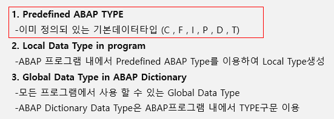

20220914 - Predefined ABAP TYPE
Predefined ABAP TYPE



DATA: gv_num1 TYPE P VALUE '1234',
gv_num2 TYPE P DECIMALS 2 VALUE '12.34',
gv_num3 TYPE I VALUE 1234,
gv_num4 TYPE N VALUE 1234,
gv_num5 TYPE N LENGTH 2 VALUE 1234,
gv_num6 TYPE N LENGTH 3 VALUE 1234,
gv_num7 TYPE N LENGTH 4 VALUE 1234.
WRITE: gv_num1,
/ gv_num2,
/ gv_num3,
/ gv_num4,
/ gv_num5,
/ gv_num6,
/ gv_num7.

/gv_num2 "/ gv_num2로 하지 않으면 error
/ gv_num2
DATA variable_for_comment TYPE STRING VALUE 'comment'. " in-line commenting
* line commentingctrl + < - line commenting
ctrl + > - line uncommenting

DATA: gv_num1 TYPE P VALUE '1234',
gv_num2 TYPE P DECIMALS 2 VALUE '12.34',
gv_num3 TYPE I VALUE 1234,
gv_num4 TYPE N VALUE 1234,
gv_num5 TYPE N LENGTH 2 VALUE 1234,
gv_num6 TYPE N LENGTH 3 VALUE 1234,
gv_num7 TYPE N LENGTH 4 VALUE 1234.
WRITE: gv_num1,
/ gv_num2,
/ gv_num3,
/ gv_num4,
/ gv_num5,
/ gv_num6,
/ gv_num7.
DATA: GV_TEXT1 VALUE 'A',
GV_TEXT2 LENGTH 3 TYPE C VALUE 'ABC',
GV_TEXT3(5) TYPE C VALUE 'ABCDE',
GV_TEXT4 TYPE STRING VALUE 'ABCDEFG',
GV_LEN TYPE I,
GV_TIME TYPE T,
GV_DATE TYPE D.
GV_TIME = SY-UZEIT.
GV_DATE = SY-DATUM.
GV_LEN = STRLEN( GV_TEXT4 ).
WRITE: / GV_TEXT1,
/ GV_TEXT2,
/ GV_TEXT3,
/ GV_TEXT4,
/ GV_LEN,
/ GV_TIME,
/ GV_DATE.
GV - global variable
LV - local variable
SY-DATUM "system date
SY-UZEIT "system time
SY-SUBRC - ’사이서브레시’라고 읽음

FIND
DATA: TEXT1 TYPE STRING,
TEXT2(4) TYPE C.
TEXT1 = 'ABAP'.
TEXT2 = 'B'.
FIND TEXT2 IN TEXT1.
IF SY-SUBRC = 0.
WRITE TEXT2.
ENDIF.
F1 - 도움말


REPLACE

DATA: TEXT3 TYPE STRING,
TEXT4(4) TYPE C.
TEXT3 = 'ABAP'.
TEXT4 = 'PPAP'.
REPLACE TEXT3 IN TEXT3 WITH TEXT4.
WRITE: / 'REPLACE', / TEXT3.
TRANSLATE

DATA: TEXT5 TYPE STRING,
TEXT6(4) TYPE C.
TEXT5 = 'ABAP'.
TEXT6 = 'abap'.
TRANSLATE TEXT5 TO LOWER CASE.
TRANSLATE TEXT6 TO UPPER CASE.
WRITE: / 'TRANSLATE', / TEXT5, TEXT6.
SHIFT


DATA: TEXT7 TYPE STRING,
TEXT8 TYPE STRING.
TEXT7 = ' ABAP'.
TEXT8 = ' ABAP'.
SHIFT TEXT7.
WRITE: / 'SHIFT', / TEXT7, TEXT8.
CONDENSE

DATA: TEXT9 TYPE STRING,
TEXT10(8) TYPE C,
TEXT11(8) TYPE C.
TEXT9 = 'AB AP'.
TEXT10 = 'AB AP'.
TEXT11 = 'AB AP'.
CONDENSE TEXT9.
CONDENSE TEXT10 NO-GAPS.
WRITE: / 'CONDENSE', / TEXT9, TEXT10, TEXT11.
OVERLAY


DATA: TEXT12 TYPE STRING,
TEXT13(8) TYPE C.
TEXT12 = ' B P'.
TEXT13 = 'AAAA'.
OVERLAY TEXT12 WITH TEXT13.
WRITE: / 'OVERLAY', / TEXT12, TEXT13.
CONCATENATE

DATA: TEXT14 TYPE STRING,
TEXT15(4) TYPE C,
TEXT16(4) TYPE C.
TEXT14 = 'AB'.
TEXT15 = 'AP'.
CONCATENATE TEXT14 TEXT15 INTO TEXT16.
WRITE: / 'CONCATENATE', / TEXT14, TEXT15, TEXT16.
SPLIT

DATA: TEXT17 TYPE STRING,
TEXT18(4) TYPE C,
TEXT19(4) TYPE C.
TEXT17 = 'AB+AP'.
SPLIT TEXT17 AT '+' INTO TEXT18 TEXT19.
WRITE: / 'SPLIT', / TEXT17, TEXT18, TEXT19.
연산자


in-class practice
DATA: TODAY_DATE TYPE D,
CURRENT_TIME TYPE T,
CELCIUS TYPE P DECIMALS 1.
TODAY_DATE = SY-DATUM.
CURRENT_TIME = SY-UZEIT.
CELCIUS = '24.6'.
DATA: NAME TYPE STRING,
UPPER_NAME TYPE STRING,
CON_NAME TYPE STRING,
STRING_LEN TYPE I.
NAME = 'Siyun Min'.
UPPER_NAME = NAME.
CON_NAME = NAME.
CONDENSE CON_NAME NO-GAPS.
STRING_LEN = STRLEN( CON_NAME ).
TRANSLATE UPPER_NAME TO UPPER CASE.
WRITE: '오늘날짜: ', TODAY_DATE,
/ '현재시간: ', CURRENT_TIME,
/ '현재 기온은 ', CELCIUS, '이고 날씨는 맑음',
/ '제 이름은 ', NAME, '이고',
/ '대문자로 표현하면 ', UPPER_NAME, '입니다.',
/ '제 이름의 길이 수는 ', STRING_LEN, '입니다.'.